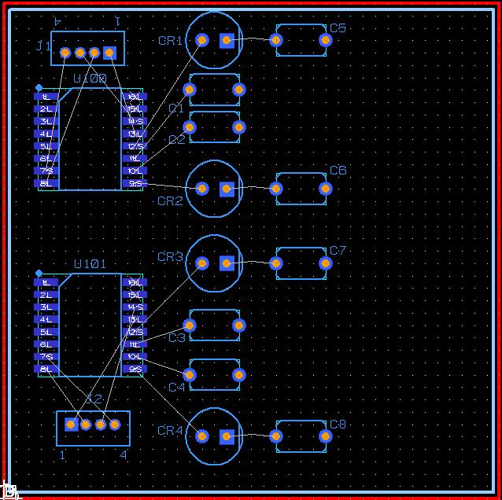
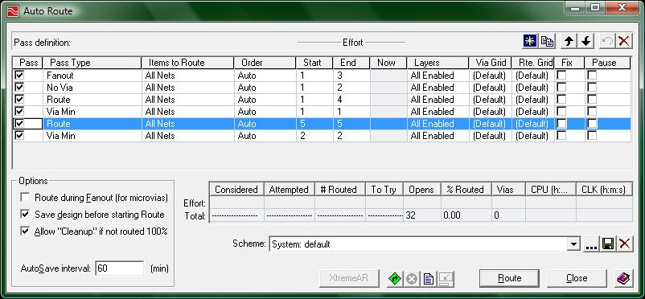
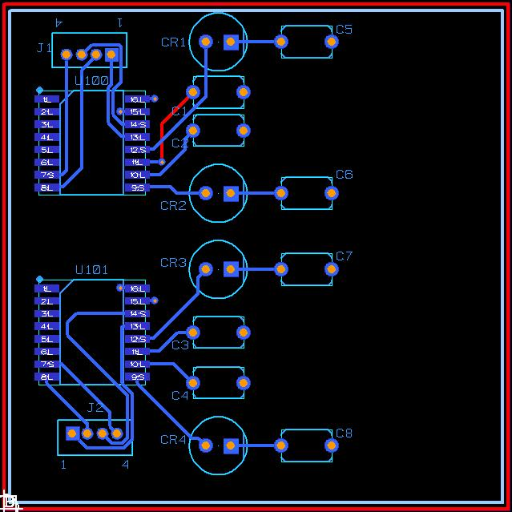
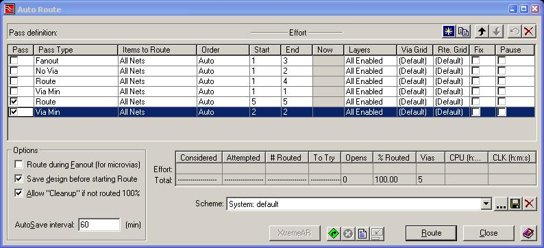
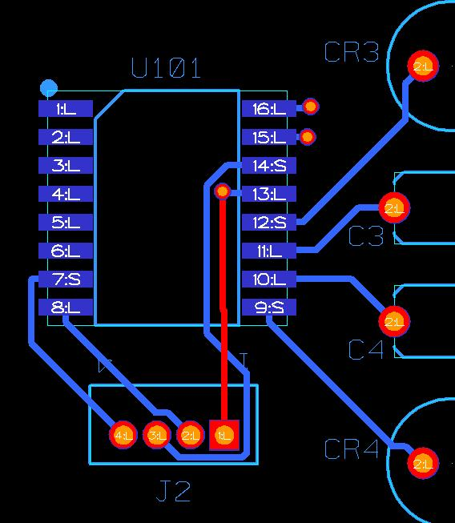
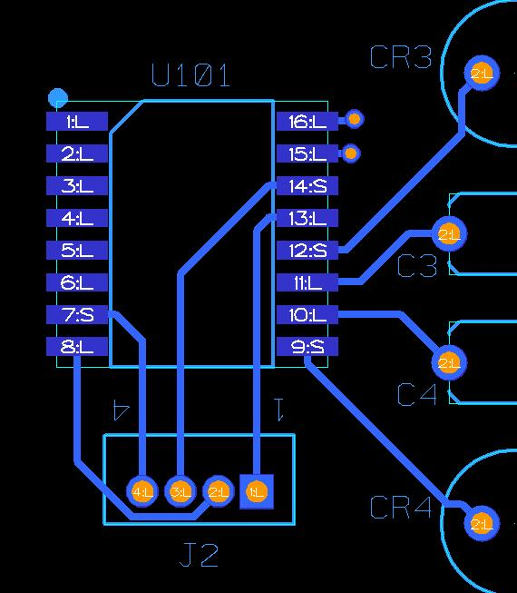

Routing:
This tutorial is to introduce the different methods of routing. There are two different methods: 1. Interactive 2. Auto Route
For those of you who would like to follow along with my examples, download this zip file. The following image shows how all of the chips are placed:

(1-start.jpg)
The Auto Route feature of Expedition PCB is very powerful. The example I have above is quite simple, however, the Auto Router will be able to figure out how to connect very complex designs so that you will not have to. To open up the Auto Route window, click the menu Route -> Auto Route.
The following image is the Auto Route window:

(2-auto_route_window.jpg)
When you first run the auto route all passes will be enabled. Each pass is designed to do one task to your entire board before performing another specific task. This time, leave all of the passes enabled so that you will be able to see what the auto router can do. Click the Route button on the bottom right and watch. Your board should look something close to the following after running the Auto Router:

(3-auto_routed.jpg)
As you can see the auto router will not always produce perfect routing. Several wires can be shortened from what was drawn and there are 2 thermals with connections purelly underneath the chip. Having no access to a wire is very bad because if that connection needs to be severed because of a mistake in connecting the chip, you will need to remove the chip before you can change the wiring. If you have access to every single wire at some point, you will not need to remove any chips in order to change the wiring of your board.
Now open up the auto routing window again and click only the last routing option like in the following:

(10-reroute_options.jpg)

As you can see the new routes are actually worse than before we started moving the connector's orientation, but do not be fooled into thinking that the first orientation of J2 was the better orientation. By deleting the 4 routes again and by manually routing, you can obtain the following:
(12-rerouted_optimally.jpg)
As fair warning you should always doublecheck the
routing of your chips after running the auto router because some times
you can draw better connections by hand.
Routing Advice:
Run the auto router first.
Often the auto router will not get the most optimum connections but at least it will give you an idea of how things can be connected
Always double check the auto router.
Some people may find that the auto routing will look good enough for them, however I will warn those people right now that you should always double check the auto router because you should try and make your wires as short as possible, which is not something the auto router is always good at.
Always have access to wire. (I.E. a connection is not completely underneath a chip)
The auto router will make some connections this way and that is very bad. If you accidently wire two things together that were not supposed to be wired together, you will need to be able to cut the wire. If the connection is entirely under chips you will need to remove the chip before you can cut the wire, which will more than likely damage the chip in the removal process.
Try to use 45 degree corners, not 90 degree corners
If you imagine the routes on your board as water canals, you would agree that having a 90 degree corner will limit the flow of water that can go through that particular canal. This same principle applies to electricity so try not to have 90 degree corners in your routing.